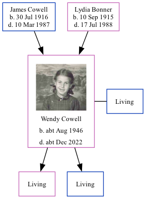

Wendy J Jackson (née Cowell) cAug 1946 - c2022 [ Home ] | [ Calendar ] | [ Surnames Index ] | [ Family History ]The child of James Cowell (an ironmonger's shop's assistant) and Lydia Bonner Wendy Cowell , a cousin on the mother's side of Nigel Horne , was born in Thanet, Kent, England c. Aug 19461,2 . She married James Jackson (with whom she had 2 surviving children Samantha and Damian ) in Thanet around Nov 19663 (Oct/Nov/Dec).
She died c. Dec 2022.
Parents James Sidney was born on 30 Jul 1916Lydia Florence was born on 10 Sept 1915Citations England & Wales births 1837-2006 - Findmypast England & Wales, Birth Index: 1916-2005 Online publication - Provo, UT, USA: The Generations Network, Inc., 2008.Original data - General Register Office. England and Wales Civil Registration Indexes. London, England: General Register Office. © Crown copyright. Published by permission of the Cont England & Wales, Marriage Index: 1916-2005 Online publication - Provo, UT, USA: The Generations Network, Inc., 2009.Original data - General Register Office. England and Wales Civil Registration Indexes. London, England: General Register Office. © Crown copyright. Published by permission of the Cont Media Wendy J Cowell England & Wales births 1837-2006 - BMD/B/1946/3/AZ/000325/065 England & Wales marriages 1837-2005 - BMD/M/1966/4/AZ/000265/154 Family Tree Map
Generated by ged2site . Last updated on Feb 19, 2025